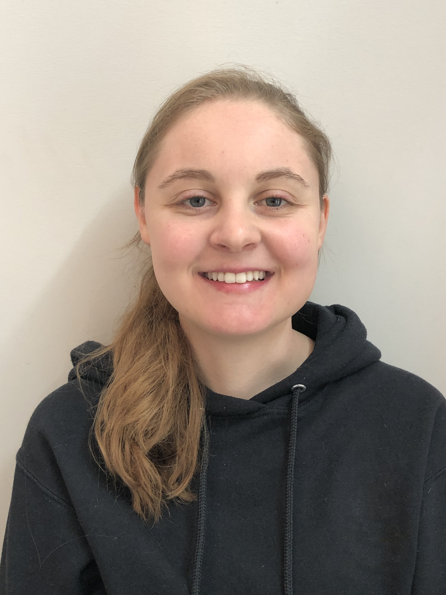

Meet... Ashley Cahalan
Hi, my name is Ashley! I live in London, ON and was born and raised here. I have one sibling, a younger brother, who is currently studying at Guelph University. I enjoy travelling (I have a family that loves to travel), learning the guitar, biking, hiking and being outdoors.
I studied Criminology and French at King’s University College at Western University and graduated this past June. For the past few years, I have loved playing intramural flag football, as well as running the Canadian Cancer Society’s post-secondary Relay For Life program at King’s.
Currently, I am a student in the Interactive Media Design program at Fanshawe College. I am looking forward to this new and exciting semester!

Meet... Professor Plum
Hello there, my name is Professor Plum! I consider myself a simple man, and I love to read and learn new things. My favourite colour is undoubtedly purple.
In my free time, I enjoy going for walks, sneaking late night snacks from the kitchen, or simply browsing the library for new books.
Though I do enjoy the occasional dinner party now and then with my friends, I prefer to be tucked away in a quiet room with a good book. In fact, you could almost always find me in the study doing just that.